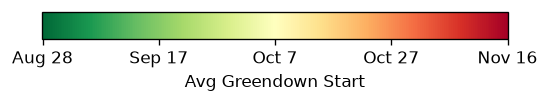
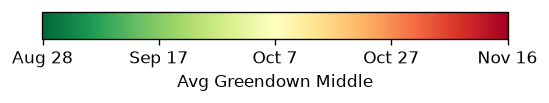
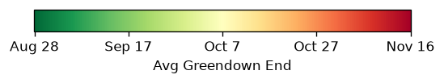

Appalachian Trail Fall Phenology — Massachusetts
Prediction for 2026-07-04 | Updated daily using NASA HLS 30 m satellite imagery
Tracking fall foliage color change along the Massachusetts Appalachian Trail using machine learning models trained on over 10 years of observations.
Decision Tree
Neural Network
Historical Averages
About
Analysis Summary
Claude Code Experience
Predicted Current Phenological State
Before
Foliage fully green; color change not yet begun
Early
Color change beginning
Late
Past peak color change
After
Foliage largely dropped; color change complete
AT Trail
Smoothed Appalachian Trail
Predicted Current Phenological State
Before
Foliage fully green; color change not yet begun
Early
Color change beginning
Late
Past peak color change
After
Foliage largely dropped; color change complete
AT Trail
Smoothed Appalachian Trail
Avg Start

Avg Middle

Avg End

What is this map?
Each colored pixel represents a 30×30 meter patch of deciduous or mixed forest along the Massachusetts Appalachian Trail. The color shows the predicted state of fall foliage color change (“greendown”) for today.
How it works
- Satellite imagery — NASA’s Harmonized Landsat-Sentinel (HLS) program delivers 30 m surface reflectance imagery every 2–5 days.
- Vegetation indices — EVI and NDVI (vegetation greenness measures) are computed from the red and near-infrared bands of each image.
- Greendown curves — A decreasing logistic curve is fitted to each pixel’s EVI time series to estimate when foliage change starts, peaks, and ends, along with 95% confidence intervals.
- Decision tree — A decision tree classifier trained on 10 years of labeled pixel-observations uses 9 features (EVI, NDVI, their recent changes, day length, days relative to that pixel’s historical average mid-transition date, and the most common predicted state over the past 7 days) to assign one of four states: Before, Early, Late, or After.
- Neural network — A two-layer LSTM (long short-term memory) network processes the full sequence of satellite observations for each pixel, from the start of the season to today. It uses the same vegetation and timing features as the decision tree plus a recent daily mean temperature signal, and learns how foliage change unfolds over time rather than treating each observation independently.
- Daily update — Each morning, new imagery and temperature data are fetched, rolling observation windows are updated, and predictions from both models are recomputed for all ~15,000 forest pixels.
Interacting with the map
- The Decision Tree tab shows today’s prediction from the decision tree. Click any pixel to see raw satellite values, model features, and recent observation history.
- The Neural Network tab shows today’s prediction from the LSTM model. Click any pixel to see its predicted state and recent observation history.
- Zoom in to explore individual 30 m pixels.
- The Historical Averages tab shows the long-term average start, middle, and end of greendown, giving context for how this year compares to prior years.
Data sources
- Satellite imagery: NASA HLS HLSL30 v002 via Google Earth Engine
- Daily temperature: gridMET (University of Idaho / Climatology Lab), ~4 km
- Forest pixels: NLCD 2021 (deciduous & mixed forest classes)
- Trail corridor: 50 m buffer around the Massachusetts AT route
- Spatial grid: UTM Zone 18N (EPSG:32618), 30 m resolution
This project was built collaboratively with Claude Code. Below are some reflections on where it helped, where it fell short, and general practices that made the collaboration work.
Strengths
- Claude could quickly build in data checks to confirm things are working correctly. It allowed me to complete this analysis and build a web page from scratch much faster than I could have done otherwise.
- Claude could run most of the work using a lower-effort model (Sonnet 4.6), but when issues arose that Sonnet could not resolve, switching to the higher-effort model (Opus 4.8) was helpful. Opus 4.8 was also able to find bugs in Sonnet’s work without being prompted.
- Claude flagged actions that would be computationally expensive or cause storage issues. For example, when I laid out my plan to run a daily prediction via a GitHub Action, it pointed out that storing the required large data files (~2–3 GB) on GitHub would not work. I described how to split the workflow and file storage between local and GitHub. This was obvious to me, but someone less experienced with allocating computation and storage might not have thought to push back.
- I enjoyed the planning feature and bouncing ideas off of it, which felt like I was collaborating with a colleague sometimes.
- Claude would sometimes push back on my suggestions or questions, which I appreciated. For example, I was interested in using GEFS meteorological forecast data because the first time step in a forecast represents current conditions, which I had used in my PhD work to get meteorological data at low latency with uncertainty estimates. Claude questioned why I wanted a forecast product for what seemed like a hindcast application. Ultimately I used gridMET because it has finer spatial resolution than GEFS, but GEFS could have been a useful workaround that Claude would not have known to suggest.
- Claude serves as a great learning tool, with the ability to ask questions at any point, especially about how things work and token usage.
Weaknesses
- Context window memory proved to be a bigger challenge than I initially expected. The conversation had to be compressed regularly, and Claude did not reliably remember key details I assumed it would retain. In the future I would rely more heavily on reference files that document key decisions and project state.
- Debugging could be more challenging because I did not have the same level of ownership and understanding of the code that I would have had if I had written it myself.
- This workflow required setting up several permissions on Google Earth Engine and GitHub that I had to handle myself. Claude walked me through most of it, but I still needed enough background knowledge to carry out the steps. There was also a fair amount of trial and error to get everything working correctly (missed permissions, or permissions set up incorrectly based on Claude’s guidance).
- Sometimes Claude did not fully implement changes, and the scope of what it changed varied. Sometimes it would only update a helper function without touching the main script. Sometimes it would automatically commit and push changes; other times it would not, and I would have to. These are easy to catch but require staying aware.
- Sometimes Claude would inadvertently undo edits I had made when asked to change something else. For example, I had added a call to plot feature distributions before the data-editing step so I could see the raw features. Whenever I asked Claude to modify the editing function, it would move the plotting call to after the editing step and change the variable from
feature_dftofeature_df_edited. I had to keep reverting the change, and even after explicitly asking Claude to stop, the behavior recurred after context compression. This highlights the importance of version control and reviewing all file changes. - Some tasks took far more time and tokens than expected. For example, reorganizing outputs into separate subdirectories (which seemed straightforward) required Claude to determine which output belonged in which folder. The situation was made worse when I switched to a lower-effort model (Haiku) partway through. Haiku broke the code and reverted all changes by checking out a previous commit, forcing a restart from scratch. The main root causes were: (1) the Jupyter notebook still had outputs saved, so Claude consumed thousands of tokens reading cell outputs it did not need; and (2)
NotebookEditre-emits the entire cell source on every call, making edits to large code cells expensive. After that experience, I started saving the notebook without outputs before asking Claude to edit it. I also began writing smaller code chunks in the notebook, keeping larger or frequently edited logic in standalone Python files so Claude could work on them more efficiently. Saving outputs from long-running steps (such as model training) to separate files rather than keeping them in the notebook is also important. - Sometimes Claude simply did not follow the instruction given. For example, I asked it to place a new function in a specific file and provided the filename, but Claude saved it under a different name.
- When asked to make formatting consistent (such as docstrings on functions), Claude noted that only about half the functions it had written had docstrings, and those that did used inconsistent styles. In the future I would include style guidelines in a reference file from the start.
- It does not know everything, and the limits of its knowledge became apparent in areas where I have deep expertise. For example, the spectral delta features at the beginning of each pixel-year sequence had missing values (NAs) because there were no prior observations to calculate a change from. Claude’s default suggestion was to fill these with the column mean, which is a reasonable general approach for randomly missing data but inappropriate here because these values should be toward the high end of the range (reflecting early-season conditions). These rows represented a small fraction of records and should be (and were) dropped instead.
- Claude struggled with ensuring that spatial data from different sources were properly aligned and shared the same coordinate reference system (CRS). When working with spatial data, I always hard-code checks of the CRS. In the future I will include in a reference file what CRS I want and specify that it should be checked each time new spatial data is added. At one point some data had been projected into the Louisiana State Plane system, which should have been flagged immediately given that all analyses were in Massachusetts.
Many common coding practices also apply
- Think about the big picture but build incrementally to debug and quality-check as you go.
- Work with a smaller subset of data before expanding. Downloading new data took considerable time, and when the analysis changed, some data had to be re-downloaded.
- Commit and push frequently, because Claude did occasionally break things and files sometimes needed to be reverted.
- Modularize code using separate files for distinct components. Claude naturally creates helper functions but did not always place them in separate files without being prompted.